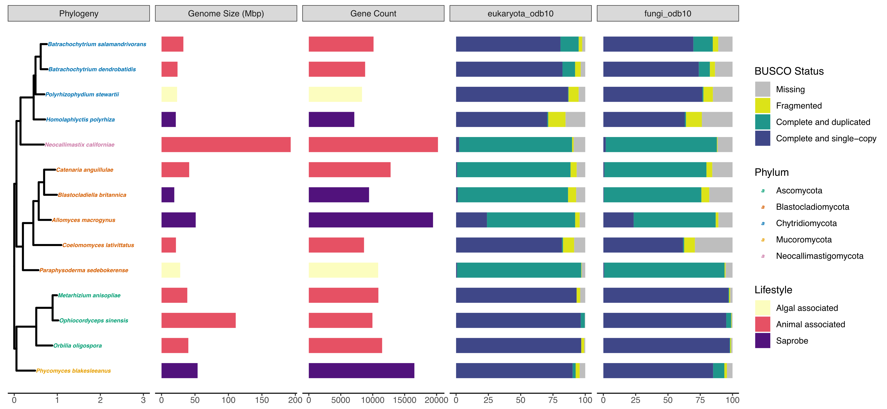

		<!-- Main -->
			<article id="main">
					
				<!-- One -->
					<section class="wrapper style4 container">
					
						<!-- Content -->
							<div class="content">
								<section>
										<header>
										<h3><strong>Obligate Insect-Associated Fungi
</strong></h3> </header>

	<p> Fungi have important roles as insect pathogens and symbionts. Using -omics, we can begin to understand the biology behind these complicated insect-microbe interactions. I have been involved in several projects focused on the genomics of obligate insect-associated fungi. One project involved assisting with removing symbionts or contaminant bacterial genomes from the genome of Massospora cicadina an obligate fungal parasite of cicadas. Another project involved comparative genomics and transcriptomics across development of the blastoclad fungus, Coelomomyces lativittatus, an obligate parasite of mosquitoes and microcrustaceans.  </p>


<div class="row">
	
	<div class="4u">
		<a class="image featured special">
		<br>
		<p>Coelomomyces lativittatus life cycle.</p></a>
	</div>

	<div class="8u">

		<p> <br>Known Coelomomyces species lack a complete asexual life cycle, instead surviving through an obligate two-host alternation of generations life cycle. To address how little was known about the genomics and biology of these unique fungi, we generated three draft-level genomes and annotations for C. lativittatus representing its haploid meiospore, orange gamete, and amber gamete life stages. </p> 
	</div>
</div>
		

<a class="image featured special">
			<br>
			<p> C. lativittatus protein set enables comparisions to other fungal taxa. From left to right, first, a phylogeny that shows the relationship of C. lativittatus to other fungal lineages. Next, a bar chart of the draft genome size (Mbp) for each taxon colored by fungal lifestyle (saprobe = purple, algal associated = yellow, animal associated = pink), followed by a bar chart of predicted gene counts for each taxon with counts colored by fungal lifestyle. Next, bar charts of BUSCO “protein” completion status for the eukaryota_odb10 and fungal_odb10 sets. Bars show the percentage of genes found in each genome annotation as a percentage of the total gene set and are colored by BUSCO status (missing = gray, fragmented = yellow, complete and duplicated = green, complete and single copy = blue). </p></a>
				
<p>We then used the draft annotations as a reference for analysis of C. lativittatus metatranscriptomes. We analyzed metatranscriptomes from across host-associated life stages, including infected larvae and excised mature sporangia from the mosquito Anopheles quadrimaculatus. We identified differentially expressed genes and enriched GO terms both across and within life stages. Generally, we found the C. lativittatus transcriptome to be a complex and dynamic expression landscape with GO terms related to metabolism and transport processes  enriched during infection and terms related to dispersal enriched during sporulation. 	</p>
	
<p>
		
<b>Related publications:</b>
<ul class="default">

	<li><b>Ettinger CL</b>, Ostovar T, Yacoub M, Ahrendt S, Hice RH, Federici BA, & Stajich JE. 2023. Genomes and transcriptomes help unravel the complex life cycle of the blastoclad fungus, Coelomomyces lativittatus, an obligate parasite of mosquitoes and microcrustaceans. Mycologia. DOI: <a href="https://doi.org/10.1080/00275514.2023.2228182"> 10.1080/00275514.2023.2228182</a>  </li>
	
	<li>Stajich JE, Lovett BR, <b>Ettinger CL</b>, Carter-House D, Kurbessoian T & Kasson MT. 2022. An Improved 1.5 Gigabase Draft Assembly of Massospora cicadina (Zoopagomycota), Obligate Fungal Parasite of 13- and 17-Year Cicadas. Microbial Resource Announcements. DOI: <a href="https://doi.org/10.1128/mra.00367-22"> 10.1128/mra.00367-22</a>  </li>
		
	<li><b>Ettinger CL</b>, Lovett BR, Kasson MT & Stajich JE. 2022. Metagenome-assembled Genomes of Bacteria associated with Massospora cicadina Fungal Plugs from Infected Brood VIII Periodical Cicadas. Microbial Resource Announcements. DOI: <a href="https://doi.org/10.1128/mra.00413-22"> 10.1128/mra.00413-22</a>  </li>
	
</ul>	
</p>


												
									
								
							
								</section>
							</div>

					</section>
					
					
					
					
						
										
								
					
			</article>
